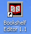
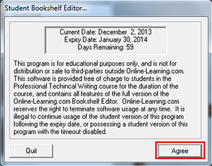
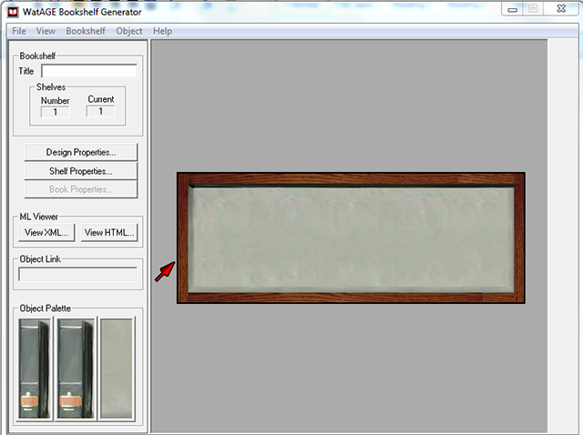

> Downloading and Installing the Bookshelf Editor >
Opening the software
2.3. Opening the software
To open the Bookshelf Editor 1.1:
- Double-click the BookshelfEditor 1.1 icon on your desktop.
- On the Student Bookshelf Editor window, click Agree.
Bookshelf Editor 1.1 displays the opening screen.
